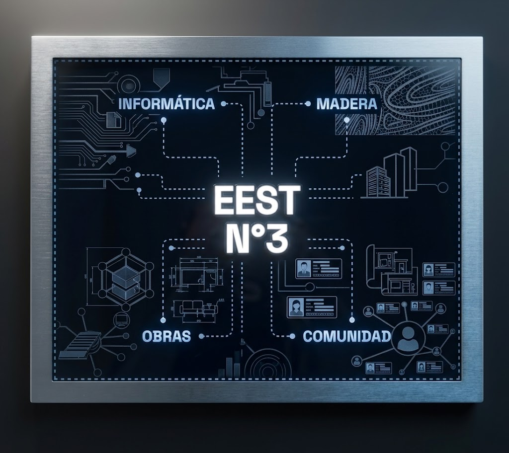

Origen
Una escuela para aprender y trabajar
La institución inicia su recorrido como Escuela Profesional y del Hogar de Mujeres de San Fernando, ampliando gradualmente sus propuestas de formación.
Desde 1914 · San Fernando
Más de un siglo de transformaciones educativas, oficios y proyectos que siguen impulsando a nuevas generaciones.
Recorrer nuestra historia1914fundación
Un punto de partida
El 24 de agosto de 1914 abrió sus puertas la Escuela Profesional y del Hogar de Mujeres de San Fernando. Sus primeras aulas funcionaron en una casa alquilada de la entonces calle San Martín, hoy Alsina, y ofrecían formación en corte y confección, lencería y bordado.
Línea de tiempo
1914
Origen
La institución inicia su recorrido como Escuela Profesional y del Hogar de Mujeres de San Fernando, ampliando gradualmente sus propuestas de formación.
1932—1938
Primer crecimiento
La escuela abre nuevas secciones y llega a reunir 370 alumnas en un solo turno. Para 1938, ya habían egresado 919 estudiantes de la institución.
1961—1975
Transformación
Luego de distintas denominaciones institucionales, desde 1975 adopta el nombre ENET N°2 “Capitán de Fragata Carlos María Moyano”, consolidando su identidad técnica.
1990
Innovación
Se incorpora computación al ciclo superior, con seis horas semanales, convirtiendo a la institución en pionera local en ofrecer estos saberes a su comunidad.
1999
Nuevas modalidades
Se incorporan propuestas de Producción de Bienes y Servicios e Informática Personal y Profesional, ampliando el puente entre la escuela, la tecnología y el mundo socio-productivo.
2000
Territorio
En julio se concreta un anhelo institucional: la escuela se instala en Miguel Cané 4565, extendiendo su oferta educativa para recibir a más estudiantes.
2005—2011
Más oportunidades
Se suma la propuesta para personas adultas y se implementan nuevos diseños curriculares técnicos, con formación general, científico-tecnológica y específica.
2012—2016
Especialidades
Se incorporan Maestro Mayor de Obras y, luego, Técnico en Industrialización de la Madera y el Mueble, junto al crecimiento de Informática y la formación vinculada al mundo del trabajo.
Hoy
La EEST N°3 forma técnicos capaces de continuar estudios superiores, participar de su comunidad y transformar desafíos reales en proyectos concretos. La cultura del trabajo, el conocimiento científico-tecnológico y la colaboración siguen siendo parte de nuestra identidad.

La historia continúa